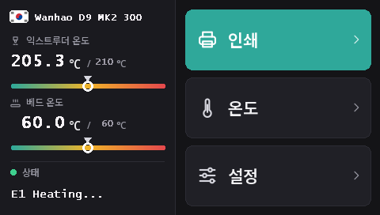

Duplicator 9 터치스크린 플래싱
MK1부터 MK3까지 모든 D9에는 같은 DWIN T5 터치스크린(480 × 272)이 달려 있습니다. 이 펌웨어와 함께 화면은 microSD 카드로 플래싱하는 16개 언어의 새 인터페이스 DGUS Reloaded 2.0으로 작동합니다.
DWIN_SET.zip 다운로드 (DGUS Reloaded 2.0)
DGUS Reloaded 2.0의 새로운 점
- 16개 언어: English, Français, Deutsch, Español, Italiano, Português, Nederlands, Polski, Türkçe, Русский, العربية, हिन्दी, 中文, 日本語, 한국어, Bahasa Indonesia. 홈 화면에서 프린터 이름 옆의 국기를 누르면 언어가 바뀌고, 프린터가 선택을 기억합니다.
- 필라멘트 센서 페이지: 설정 → 필라멘트 → 필라멘트 센서. 필라멘트 센서를 참고하세요.
- 사라지지 않는 상태 표시줄: 마지막 메시지(예: Ready)가 30초 뒤에 사라지지 않고 화면에 계속 남아 있습니다.
- 노즐과 베드의 온도 게이지, 목표 온도 표시 포함.
- 모든 페이지의 새로운 디자인: 어두운 테마, 더 큰 버튼, 팝업의 그림 아이콘.

DGUS Reloaded 2.0을 쓰려면 메인보드에 v2.0.9 이상이 필요합니다. v2.0.8 이하에서는
켤 때마다 언어가 영어로 돌아가고 필라멘트 센서 페이지가 작동하지 않습니다. 먼저 메인보드를
플래싱하세요.
1. microSD 카드 포맷
할당 단위 크기 4096바이트의 FAT32로 포맷하세요. 다른 크기로 포맷하면 화면이 카드를 무시합니다.
- Windows: Windows 11은 FAT32 포맷을 거부하는 경우가 많습니다. GUIFormat을 사용하고 할당 단위 크기를 4096으로 설정하세요.
- Linux:
sudo mkfs.fat -F 32 -s 8 /dev/sdX1(먼저lsblk로 장치를 확인하세요). - macOS:
sudo newfs_msdos -F 32 -c 8 /dev/diskN(diskutil list로 확인하세요).
2. 파일 복사
DWIN_SET.zip의 압축을 풀고 DWIN_SET 폴더 전체를 카드의 최상위에 복사하세요.
3. 플래싱
- 프린터를 끄고 전원 플러그를 뽑습니다.
- 베이스 앞쪽을 열어 화면 뒷면에 손이 닿게 합니다. microSD 슬롯이 그곳에 있습니다.
- 카드를 넣고 전원을 켭니다. 10~30초 안에 화면에 업데이트가 표시됩니다. 화면이 정상적으로 다시 시작될 때까지 기다리세요. 전체 1~3분 걸립니다.
- 전원을 끄고 카드를 빼낸 뒤 베이스를 닫습니다.
Wanhao의 D9 화면 업데이트 영상에서 슬롯 위치를 볼 수 있습니다.
어디에서 왔나요
DGUS Reloaded 2.0은 DGUS Reloaded 1.0.3 (Desuuuu, 이후 Neo2003 제작)을 한 페이지씩 새로 그린 것입니다. 소스, 화면 파일을 생성하는 프로그램, 번역은 GitHub에 있습니다. 한국어 표현이 틀렸거나 어색한가요? Discord에서 알려 주시거나 그곳에 이슈를 열어 주세요.
DGUS Reloaded 1.0.3으로 되돌리려면(예: v2.0.9보다 오래된 펌웨어를 쓸 때) DWIN_SET_1.0.3.zip을 같은 방법으로 플래싱하세요.
Wanhao 화면으로 되돌리기
Wanhao 화면 펌웨어는 Wanhao 메인보드 펌웨어와만 작동합니다. MK1: MK1 페이지에서 버전이 맞는 화면 파일. MK1 + 키트, MK2, MK3: DWIN_SET_MK2.zip. 절차는 같습니다.